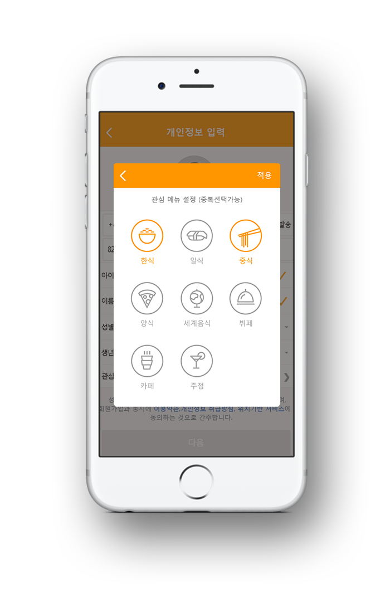
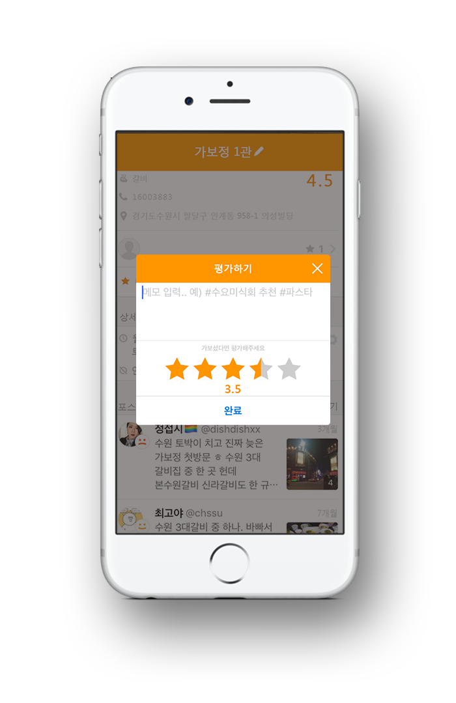

-
overview
최근 경쟁사 맛집 어플들은 테마별로 맛집을 추천하여 안내해주는 기능과 맛집 검색을 하면 텍스트뿐만 아니라 사진도 첨부하여 사용자들에게 좋은 경험을 주어 맛집 앱 사용률이 증가하고 있습니다. 맛집 앱인 ‘뽈레(polle)’ 에서는 기존의 맛집 어플이 가지고 있는 진부한 이미지에서 벗어나 고객들이 스스로 만족할 수 있는 서비스를 제공하고자 앱을 리뉴얼하게 되었습니다.
-
production period
2018.03.16~2018.04.06
-
structure
경쟁사 조사 데이터를 바탕으로 고객이 꼭 필요로 하는 서비스를 강조하고, 기존 뽈레 앱의 번거로운 가입 절차를 단축시킴으로써 쉬운 뽈레 가입 프로세스를 적용하였습니다.
analysis
기존 뽈레 앱의 전달 시간이 많이 소요되었던 초대코드 발송을 정해진 시간 에 관리자의 실시간 확인 후 발송으로 개선하였고 친구 추가를 통해서만 얻을 수 있던 맛집 정보 그리고 세세하게 알 수 없던 평점을 사용자들이 보다 쉽고 편리하게 많은 정보들을 얻을 수 있도록 개선하였습니다.
analysis
-
1
테마별 맛집 추천
관심별 맛집 추천
기능 도입기존의 사용자 공유만을 통하여 얻을 수 있었던 맛집 정보를 테마별, 사용자의 관 심별로 추천해주는 기능을 도입하여 보다 다양한 맛집을 추천 받을 수 있도록 사용할 수 있도록 개선하였 습니다.
-
2
초대코드
발송 시간 지연
부분 개선정해지지 않았던 초대코드 발송 시간을 정하여 보다 빠 르고 간편하게 회원가입을 할 수 있도록 개선하였습니다.
-
3
평점의 수치화
좋음, 보통, 나쁨으로만 나뉘었던 평점을 수치화 시켜 더욱더 정확한 맛집 정보를 확인할 수 있도록 개선하였습니다.
service
 
-
관심별 맛집추천
회원 가입시 관심 메뉴를 설정하여 관심별 메뉴 추천을 받아보세요.
한식부터 다양한 세계 음식들까지 다양한 맛집들이 여러분을 기다리고 있습니다. -
자세한 평점
기존의 좋음, 보통, 나쁨으로만 매길 수 있었던 평점을 수치화 하여 더욱더 자세한 맛집 정보를 찾을 수 있도록 하였습니다.
뽈레 앱의 변화를 경험해보세요. -
나만의 맛집지도
친구들과 함께 맛집을 공유하고 나만의 맛집 지도를 만들어보세요.